Оформляем графики по рекомендациям эксперта

В прошлом уроке вместе с экспертом Школы научились разрабатывать СГП, выяснили, какие объекты нужно указывать на плане, а также изучили, что входит в состав СГП для ППР в полном и неполном объеме, поняли, когда они могут понадобится.
В новом уроке проанализируете графики, которые будете использовать в работе. Эксперт Школы подробно объяснит, как их заполнить, научит использовать формулы для расчетов и учитывать методы работ.
Из каких графиков состоит ППР
Рассмотрим состав ППР в полном объеме. В него входят:
- календарный план или график производства работ по объекту;
- график поступления на объект строительных конструкций, изделий, материалов и оборудования;
- график движения трудовых ресурсов по объекту;
- график движения основных строительных машин по объекту.
ППР в неполном объеме содержит календарный план или график производства работ по объекту.
Давайте подробнее рассмотрим каждый график. Начнем с календарного плана.
Как составить календарный план или график производства работ по объекту
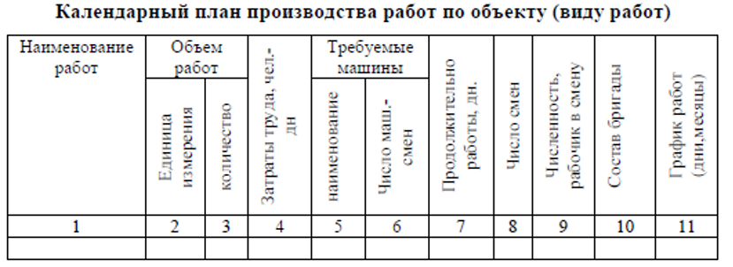
Календарный план состоит из двух частей:
- Левая часть (графы 1–10) – расчетные данные о работах;
- Правая часть (графа 11) – линейный график работ с привязкой к календарным датам.
Графа 1: номенклатура работ. Формируют после анализа проектной документации. Количество работ зависит от вида строительства, типов объектов, конструктивных особенностей и сложности проекта, с учетом последовательности, в которой возводят здания или сооружения.
Монтаж оборудования и специальные работы (сантехнические, электромонтажные и другие работы, которые выполняют субподрядные организации). Указывают одной строкой с обозначением сроков выполнения. На основе этих сроков субподрядчики составляют и согласовывают свои календарные планы с заказчиком.
Графы 2 и 3: объемы работ. Определяют по рабочим чертежам и сметам в единицах измерения, принятых в сметных нормах. Для расчета ресурсов и выбора оборудования некоторые объемы указывают в нескольких единицах измерения.
Графы 4, 5, 6: трудоемкость и машино-смены. Рассчитывают по сметным нормативам.
Как узнать трудоемкость работы?
Трудоемкость работы Q определяют по формуле: 𝑄 = 𝐸*𝑉/𝑡,
E – нормативное значение в человеко-часах на выполнение единицы объема работ;
V – объем работ;
t – количество часов в смену.
Количество машино-смен, которое необходимо, чтобы выполнить работы P определяется по формуле: 𝑃 = 𝑀* 𝑉/𝑡,
где M – нормативное значение в машино-часах на выполнение единицы объема работ.
Нормы трудоемкости на единицу объема берите из сборников ГЭСН, ФЕР или ТЕР по видам работ
Смотрите ниже пример определения норм затрат труда по смете.
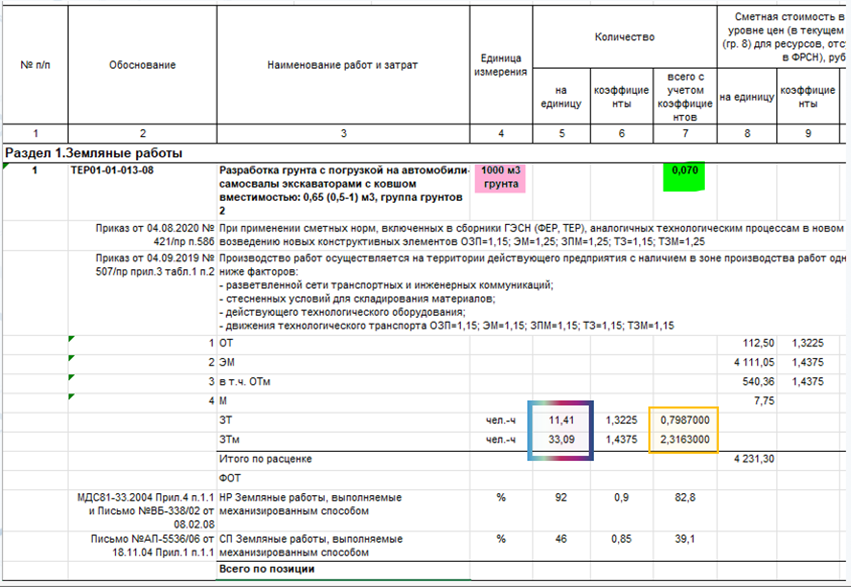
Графа 8: число смен. Устанавливают в зависимости от условий работы.
Графа 9: численность рабочих и состав бригад. Определяют исходя из ресурсов подрядной организации, а также из общей продолжительности работ, которая установлена в договоре подряда.
Графа 7: продолжительность. Определяют по формуле:
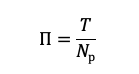
П – продолжительность, дней,
Т – трудоемкость в человеко-часах,
Nр – количество рабочих
Трудоемкость определяют как сумму затрат труда рабочих и машинистов:
Т=Q+P
Если на все виды работ, даже те, которые выполняют параллельно, уходит больше времени, чем установили в договоре подряда, увеличьте количество рабочих.
Пример. Определение продолжительности работ
Вид работы: Разработка грунта с погрузкой на автомобили-самосвалы экскаваторами.
Объем: 400 м3.
В соответствии с ГЭСН 01-01-013-08 нормы трудоемкости:
Затраты труда рабочих-строителей Разряд 2 – 11,41 чел.-ч. на 1000 м3.
Затраты труда машинистов – 33,09 на 1000 м3.
Затраты труда:
𝑄 = 𝐸*𝑉/𝑡 = 0,01141*400/8=0,57 чел.-дн.
Число машино-смен:
𝑃 = 𝑀* 𝑉/𝑡=0,03309*400/8=1,66 маш.-смен.
Продолжительность:
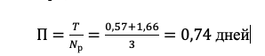
Округляем значение до целого числа – 1 день.
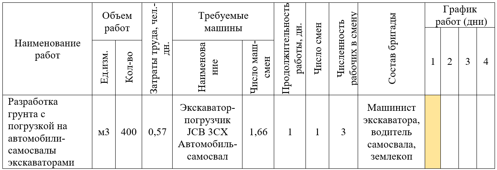
Как заполнить график поступления на объект строительных конструкций, изделий, материалов и оборудования
Наименования конструкций, изделий, материалов и оборудования, единицы измерения и их количество берите из рабочей документации, спецификации. Если РД отсутствует, то можно брать данные из сметы или ведомости объемов работ.
График поступления заполняйте по календарному графику работ, учитывая, что необходимые материалы, изделия и оборудование поступят на строительную площадку до начала работ.
Перейдем к более наглядному примеру.
Пример заполнения графика поступления на объект строительных конструкций, изделий, материалов и оборудования
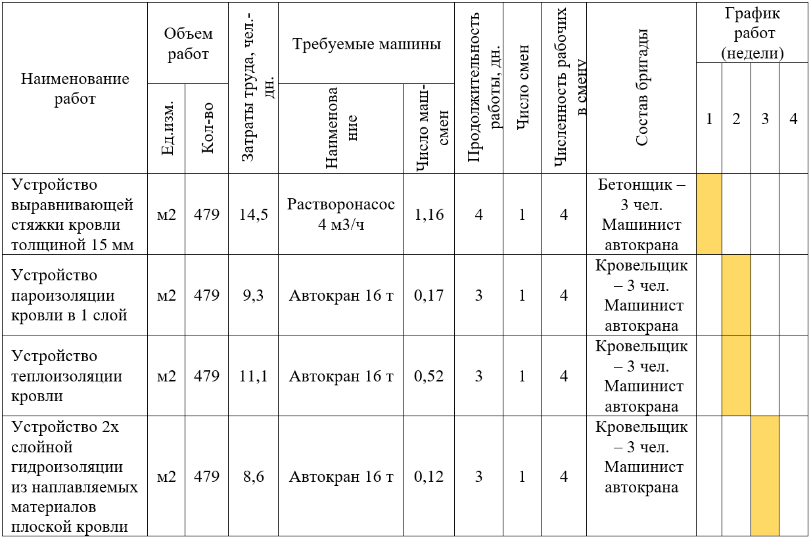
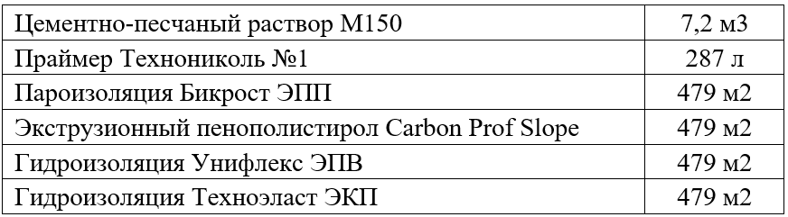
Цементно-песчаный раствор М150 используют для цементно-песчаной стяжки. Так как раствор доставляют на объект в готовом виде, то даты поставки материала и проведения работ должны совпадать.
Праймер и Бикрост ЭПП применяют для пароизоляции. Материалы могут доставить на объект раньше второй недели, либо в эту же неделю.
Экструзионный пенополистирол Carbon Prof Slope применяют для теплоизоляции, материал могут доставить на первой или второй неделе.
Гидроизоляцию могут доставить на первой, второй или третьей неделе.
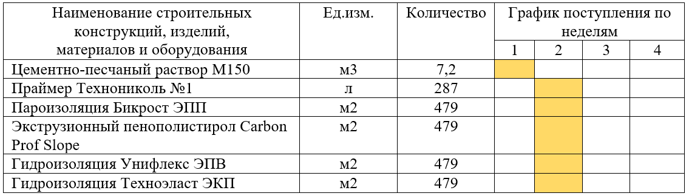
Как заполнить график движения трудовых ресурсов по объекту
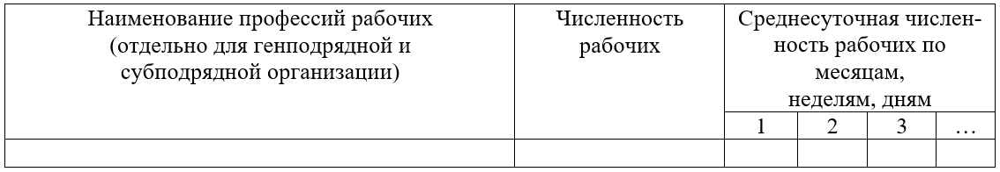
В график вносят все профессии рабочих по календарному графику работ. Перейдем к примеру.
Пример заполнения графика движения трудовых ресурсов по объекту
Работы в данном примере производят последовательно.
Работы проводят:
- Бетонщик – 3 чел.
- Машинист автокрана – 1 чел.
- Кровельщик – 3 чел.
Бетонщики нужны на первой неделе, когда устраивают стяжку. Машинист автокрана нужен на протяжении производства всех видов работ. Кровельщики нужны на второй и третьей неделе.
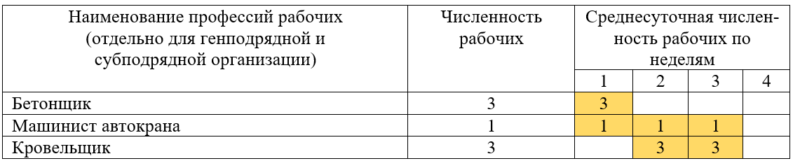
Как заполнить график движения основных строительных машин по объекту
В график вносят все машины по календарному графику работ. Составим график.
Пример заполнения графика движения основных строительных машин по объекту
Какие машины нужны по графику:
- Растворонасос 4 м3/ч – для устройства стяжки;
- Автокран 16 т – для подачи материалов на кровлю, на протяжении всех видов работ.
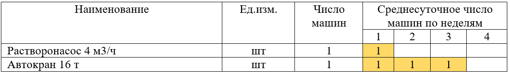
Методы работ
Когда составляете графики, учитывайте методы работ. Для вашего удобства, собрали их в удобные слайды, которые вы можете скачать и использовать в своей работе.
Материал к уроку (PDF)
Методы работ:
PDF получен с исходной страницы. Поля для названия организации и других персональных данных оставлены пустыми.
Урок окончен. Перед тем как перейти в следующий урок, выполните практическое упражнение. Если при решении задачи у вас возникнут сложности, вы всегда можете воспользоваться подсказкой в левом верхнем углу интерактива.
При решении задачи пользуйтесь проверенными данными. Сборники ГЭСН с актуальными значениями есть на портале «ФГИС ЦС» в разделе «Сборники сметных норм».